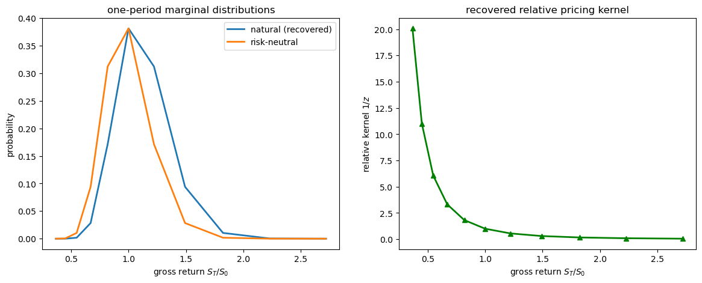
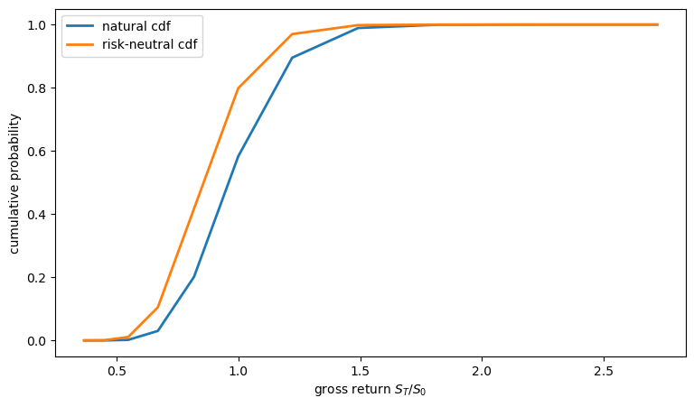
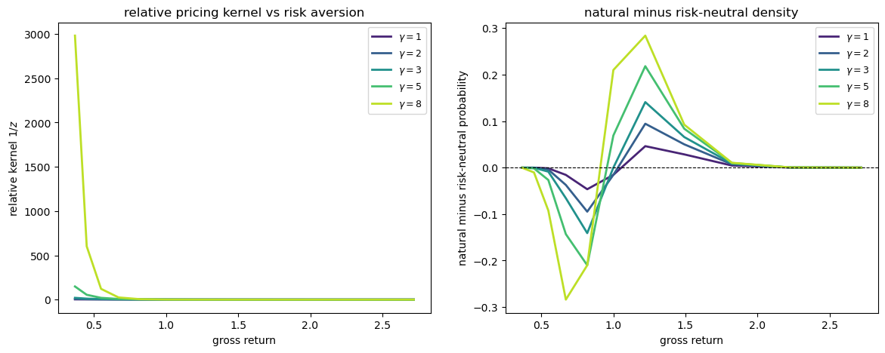
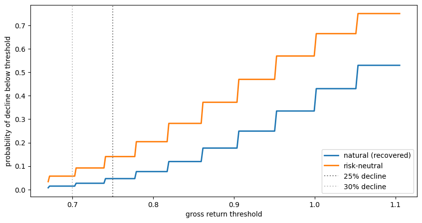
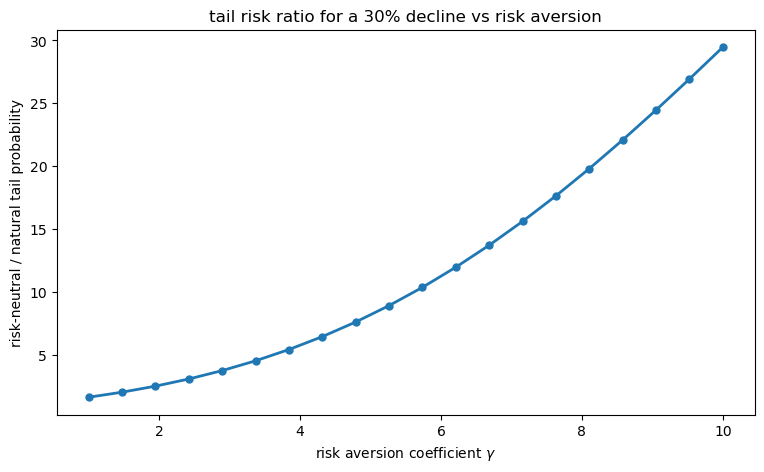

100. The Recovery Theorem#
100.1. Overview#
Asset prices are forward-looking: they encode investors’ expectations about future economic states and their valuations of different risks.
A long-standing question in finance is whether one can recover the probability distribution used by investors – their subjective beliefs – from observed asset prices alone.
Option prices reveal state prices; once these are normalized by the riskless discount factor, the resulting probabilities are the risk-neutral probabilities implied by asset prices after risk adjustments have been folded in.
These are not the natural probabilities that investors actually assign to future states of the world.
The two differ because risk-neutral probabilities blend together two distinct objects: the market’s true beliefs about the future, and investors’ aversion to risk.
The link between them is the pricing kernel, which reweights natural probabilities to deliver state prices.
Separating beliefs from risk aversion has traditionally required parametric assumptions about the preferences of a representative investor.
Ross [2015] showed otherwise.
Ross’s theorem says that, in a finite-state Markov economy, state prices can be enough.
Suppose the Arrow–Debreu state-price transition matrix is arbitrage-free and irreducible.
If the pricing kernel also satisfies a structural restriction called transition independence, then state prices uniquely determine both the natural probability transition matrix and the transition pricing kernel.
No historical return data or assumed utility function is needed if some assumptions about the structure of the pricing kernel hold.
This is the Recovery Theorem.
It has several important implications:
It shows how state-price transition data can identify the market’s forward-looking natural distribution when the assumption holds
It provides tests of the efficient market hypothesis.
It sheds light on the “dark matter” of finance: the probability of rare catastrophic events embedded in market prices.
This lecture covers
the Arrow–Debreu framework linking state prices, risk-neutral probabilities, the pricing kernel, and natural probabilities,
Ross’s Recovery Theorem and its proof via the Perron–Frobenius theorem,
an implementation that recovers the natural distribution from a simulated state-price matrix, and
how option prices and forward equations can be used to estimate transition state prices,
comparisons between risk-neutral and recovered natural densities.
Let’s import the packages we’ll need.
import numpy as np
import matplotlib.pyplot as plt
from scipy.linalg import eig
from scipy.stats import norm
import matplotlib.cm as cm
100.2. Model setup#
100.2.1. Arrow–Debreu state prices#
Consider a discrete-time, discrete-state economy.
At each date the economy occupies one of \(m\) states \(\theta_1, \ldots, \theta_m\).
An Arrow–Debreu security pays $1 if the economy is in state \(\theta_j\) next period and nothing otherwise.
Denote by \(p(\theta_i, \theta_j)\) the price today, when the current state is \(\theta_i\), of the Arrow–Debreu security paying in state \(\theta_j\) next period.
Collect these into an \(m \times m\) state price transition matrix
As in Competitive Equilibria with Arrow Securities, the row sums give the state-dependent riskless discount factor: \(\sum_j p(\theta_i, \theta_j) = e^{-r(\theta_i)}\).
Here \(r(\theta_i)\) is the one-period continuously compounded riskless rate in current state \(\theta_i\).
More generally, if an asset pays \(g(\theta_j)\) next period, then its price in state \(\theta_i\) is
Let
be the price of a one-period riskless bond in state \(\theta_i\).
Normalizing Arrow prices by this bond price gives the risk-neutral transition probabilities
Thus the same asset price can be written as
Here \(E_i^*\) denotes conditional expectation under \(q^*(\theta_i,\cdot)\).
The asterisk marks the risk-neutral, or martingale, probability measure.
It is useful to separate this one-period normalization from the dynamic transition structure.
If \(Q(\theta_i,\theta_j,T)\) denotes the risk-neutral probability of moving from \(\theta_i\) to \(\theta_j\) over \(T\) periods, and \(0<t<T\) is an intermediate horizon, then the Markov forward equation is
In matrix notation, multiperiod risk-neutral transition matrices compose by matrix multiplication.
100.2.2. The pricing kernel#
Using the stochastic-discount-factor notation studied in Asset Pricing: Finite State Models and the Arrow-security notation used in Competitive Equilibria with Arrow Securities, the pricing kernel \(\phi(\theta_i, \theta_j)\) relates state prices to natural probabilities via
where \(f(\theta_i, \theta_j)\) is the natural (conditional) probability of transitioning from state \(\theta_i\) to \(\theta_j\).
As in the representative-agent equilibrium calculation in Competitive Equilibria with Arrow Securities, the canonical additively separable model with discount factor \(\beta\) gives
This formula has a special structure: the kernel can be written as a ratio of two state-specific terms.
Ross calls this property transition independence.
We will say more about it soon.
100.2.3. The identification challenge#
Before stating the restriction, it helps to see why one is needed at all.
Given \(P\), any pair \((\phi, f)\) satisfying \(p_{ij} = \phi_{ij} f_{ij}\) for every \((i,j)\) is consistent with observed state prices.
The state-price matrix \(P\) supplies \(m^2\) equations.
A natural transition matrix \(F\) contributes \(m(m-1)\) free entries (rows sum to one), and an arbitrary kernel \(\phi\) contributes another \(m^2\) – a total of \(2m^2 - m\) unknowns against only \(m^2\) equations.
The system is under-identified by \(m^2 - m\) parameters, so some structural restriction on the kernel is needed to pin down \(\phi\) and \(f\) separately.
Transition independence restriction does the job, as we will see in the next section.
100.2.4. Transition independence#
Definition 100.1 (Transition Independence)
A pricing kernel is transition independent if there exists a positive function \(h\) on the state space and a positive scalar \(\beta\) such that for every transition from state \(\theta_i\) to \(\theta_j\),
Transition independence says the kernel depends on the ending state and normalizes by the beginning state.
In the representative-agent complete-markets environment above, it holds under intertemporally additive separable utility (where \(h = U'\)).
In particular, this holds for (100.1).
Transition independence helps because it ties all \(m^2\) entries of \(\phi\) together: once the \(m\) state-specific values are known, the whole kernel is pinned down.
It therefore cuts \(\phi\) from \(m^2\) free entries down to \(m\), so the system becomes exactly identified.
Under transition independence, the state-price equation becomes
In matrix notation, defining the diagonal matrix \(D\) with \(D_{ii} = h(\theta_i)/\beta\),
or equivalently,
100.3. The recovery theorem#
100.3.1. Reduction to an eigenvalue problem#
Since \(F\) is a stochastic matrix, its rows sum to one: \(F e = e\) where \(e\) is the vector of ones.
Substituting the expression for \(F\):
This is an eigenvalue problem where we seek a positive vector \(z\) and scalar \(\beta\) satisfying \(Pz = \beta z\).
In principle every eigenvalue-eigenvector pair of \(P\) is a formal solution, but only the one with a strictly positive eigenvector is economically valid: \(D_{ii} = 1/z_i\) must be positive (so \(z_i > 0\)), and \(F\) must have nonnegative entries.
The Perron–Frobenius theorem guarantees that exactly one such pair exists.
Theorem 100.1 (Perron–Frobenius)
If \(A\) is a nonnegative irreducible matrix, then
\(A\) has a positive real eigenvalue \(r\) equal to its spectral radius (the Perron root).
There exists a strictly positive eigenvector \(z \gg 0\) with \(Az = rz\), unique up to scaling.
No other eigenvector is strictly positive.
Other eigenvalues can have the same modulus when the matrix is imprimitive, but the strictly positive eigenvector is unique up to scale.
See Section 1.2.3 of Sargent and Stachurski [2024] for details.
See also the full statement in The Perron-Frobenius Theorem.
Applied to the recovery problem: the Perron root is \(\beta\) (the subjective discount factor) and the Perron vector \(z\) determines \(D\) via \(D_{ii} = 1/z_i\).
100.3.2. Ross’s recovery theorem#
The three assumptions in the theorem each carry a specific role.
Assuming the Arrow–Debreu state prices are identified, no-arbitrage guarantees that \(P\) has nonnegative entries and that the state prices encode a well-defined pricing measure.
Irreducibility ensures the economy is not divided into disconnected sub-economies – without it, the Perron–Frobenius theorem gives multiple candidate eigenvectors and recovery breaks down.
Transition independence is the key economic restriction.
It says the pricing kernel factors as \(\beta h(\theta_j)/h(\theta_i)\), so the entire kernel is pinned down by a single vector \(h\) (or equivalently \(z\)).
With these in mind, the Recovery Theorem follows from the Perron–Frobenius theorem.
Theorem 100.2 (Recovery Theorem)
Suppose prices provide no arbitrage opportunities, that the state price transition matrix \(P\) is irreducible, and that the pricing kernel is transition independent.
Then there exists a positive solution \((\beta, z, F)\) to the recovery problem in which \(z\) is unique up to normalization, and the implied natural probability transition matrix \(F\) and transition pricing kernel are unique.
Proof. Because \(P\) is nonnegative and irreducible, the Perron–Frobenius theorem gives a unique positive eigenvector \(z \gg 0\) with positive eigenvalue \(\lambda > 0\) satisfying \(Pz = \lambda z\).
Setting
the natural probability transition matrix is uniquely recovered as
To confirm \(F\) is stochastic, note that all entries are nonnegative (since \(p_{ij} \geq 0\) and \(z_i, z_j > 0\)) and
Uniqueness follows from the uniqueness of the Perron–Frobenius eigenvector.
100.3.3. Pricing kernel from the eigenvector#
The recovered transition-kernel values are
where \(h(\theta_i) = \beta/z_i\) follows from \(D_{ii} = h(\theta_i)/\beta = 1/z_i\).
It is useful to distinguish the full transition kernel \(\phi_{ij} = \beta z_i/z_j\), which depends on both origin and destination states, from the relative kernel component \(1/z_j\), which depends only on the destination state.
Ross’s Table I reports the destination-state shape \(1/z_j\), normalized so that the middle state equals one.
Destination states with high \(z_j\) have low kernel values: for a fixed origin \(i\), the kernel \(\beta z_i/z_j\) is decreasing in \(z_j\).
When \(h\) represents marginal utility and states are ordered by consumption or payoff, larger \(z_j\) corresponds to lower marginal utility – “good times” that require less insurance and so receive less pricing weight per unit of natural probability.
The same eigenvector argument also yields a useful limiting case.
If the one-period bond price is identical in every current state, then the vector of ones is already the Perron vector, so recovery has no state-dependent change of measure left to perform.
Corollary 100.1
If the riskless rate is the same in all states (\(Pe = b e\) for some scalar \(b\)), then the unique natural distribution consistent with recovery is the risk-neutral (martingale) distribution itself: \(F = (1/b) P\).
Proof. When \(Pe = b e\), the vector of ones \(e\) is the Perron eigenvector with eigenvalue \(b\).
By the uniqueness part of the Perron–Frobenius theorem, \(z = e\) (up to scaling) and \(\beta = b\).
Setting \(z = e\) gives \(D = I\), so
100.4. Numerical example#
We now demonstrate the Recovery Theorem numerically.
100.4.1. Building a finite-state example#
We build the economy directly on a finite grid of log payoff states \(s_1, \ldots, s_m\).
On this grid we choose three primitives:
a row-stochastic irreducible natural transition matrix \(F\),
a subjective discount factor \(\beta = e^{-\rho T}\), and
a CRRA transition pricing kernel \(\phi_{ij} = \beta e^{-\gamma(s_j-s_i)}\).
The state-price matrix is then constructed from
This means the Recovery Theorem assumptions hold by construction: \(P\) is nonnegative, \(F\) is a Markov transition matrix, and the kernel is transition independent with \(z_i \propto e^{\gamma s_i}\).
To keep the example close to Ross’s Section IV, we choose \(F\) to have lognormal-shaped rows.
The continuous benchmark is a lognormal payoff with CRRA utility:
where \(\xi \sim N(0,1)\), \(\mu\) is the expected growth-rate parameter, \(\sigma\) is volatility, \(T\) is the horizon, \(\gamma\) is the CRRA coefficient, and \(\rho\) is the continuously compounded subjective discount rate.
The \(T\)-period pricing kernel is
Equivalently, if \(s=\log S_0\) and \(s_T=\log S_T\), then the state-price density with respect to the future log state \(s_T\) is
where \(n\) is the standard normal density.
Thus the natural log return satisfies
Following Ross’s Table I, we represent the distribution on a finite grid of states.
This example is Ross-inspired rather than an exact reproduction of Ross’s Table I.
Ross’s Table I uses a fixed future payoff distribution, so its rows of \(F\) are identical.
Here the same CRRA/lognormal pricing logic is embedded in a finite Markov transition matrix whose rows shift with the current state.
Ross uses states from \(-5\) to \(+5\) standard deviations; we use the same range below.
The truncation is an essential part of the finite-state model: it is what brings the example into the Perron–Frobenius setting.
In the unbounded continuous lognormal growth model, Ross shows that recovery is not unique.
On the finite grid, the natural transition probabilities and state prices are
where \(s_i = \ln S_i\), \(s_j = \ln S_j\), \(n(\cdot)\) is the standard normal density, and the discretized probabilities \(f_{ij}\) are normalized row by row.
The next cell constructs this finite grid and builds \(P\).
def build_state_price_matrix(μ, σ, γ, ρ, T=1.0, n_states=11, n_σ=5):
"""Build a discretized lognormal/CRRA state-price matrix."""
states = np.linspace(-n_σ * σ * np.sqrt(T),
n_σ * σ * np.sqrt(T),
n_states)
ds = states[1] - states[0]
m = n_states
P = np.zeros((m, m))
F = np.zeros((m, m))
drift = (μ - 0.5 * σ**2) * T
# First build a row-stochastic natural transition matrix on the bounded grid
for i in range(m):
s_i = states[i]
for j in range(m):
s_j = states[j]
log_return = s_j - s_i
F[i, j] = norm.pdf(log_return, loc=drift,
scale=σ * np.sqrt(T)) * ds
F[i] = F[i] / F[i].sum()
# Price each Arrow claim as natural probability times the CRRA kernel
for j in range(m):
log_return = states[j] - s_i
kernel = np.exp(-ρ * T) * np.exp(-γ * log_return)
P[i, j] = kernel * F[i, j]
return P, states
Now choose a calibration and build the state-price matrix.
μ = 0.08 # 8% annual expected return
σ = 0.20 # 20% annual volatility
γ = 3.0 # CRRA coefficient
ρ = 0.02 # 2% annual continuous discount rate
T = 1.0 # one-year horizon
P, states = build_state_price_matrix(μ, σ, γ, ρ, T,
n_states=11, n_σ=5)
print("State-price row sums:")
print(np.round(P.sum(axis=1), 4))
print(f"Middle-state risk-free rate: {-np.log(P[5].sum()):.4f}")
State-price row sums:
[0.7154 0.9046 0.9713 0.9798 0.9802 0.9802 0.9802 0.9806 0.9892 1.0621
1.3429]
Middle-state risk-free rate: 0.0200
The row sums are the model-implied one-period bond prices in each current state.
They vary near the boundaries because the finite grid truncates and renormalizes the conditional transition probabilities.
100.4.2. Applying the recovery theorem#
The Recovery Theorem requires computing the Perron eigenvector of \(P\).
def recover_natural_distribution(P, tol=1e-10):
"""
Recover natural probabilities and the relative pricing kernel
from state prices.
"""
m = P.shape[0]
eigenvalues, eigenvectors = eig(P)
eigenvalues = np.real_if_close(eigenvalues, tol=1000)
eigenvectors = np.real_if_close(eigenvectors, tol=1000)
# Ross recovery uses the Perron root and its strictly positive eigenvector
real_mask = np.isreal(eigenvalues)
real_eigenvalues = np.asarray(
eigenvalues[real_mask].real, dtype=float)
real_eigenvectors = np.asarray(
eigenvectors[:, real_mask].real, dtype=float)
order = np.argsort(real_eigenvalues)[::-1]
for idx in order:
β_candidate = real_eigenvalues[idx]
z_candidate = real_eigenvectors[:, idx]
if np.mean(z_candidate) < 0:
z_candidate = -z_candidate
if β_candidate > 0 and np.all(z_candidate > tol):
β_recovered = β_candidate
z = z_candidate
break
else:
raise ValueError("No strictly positive real eigenvector found")
z = z / z[m // 2]
D = np.diag(1.0 / z)
D_inv = np.diag(z)
# Converts state prices into probabilities
F = (1.0 / β_recovered) * D @ P @ D_inv
min_entry = F.min()
row_sum_error = np.max(np.abs(F.sum(axis=1) - 1.0))
if min_entry < -tol:
raise ValueError(f"Recovered F has negative entries: min={min_entry}")
if row_sum_error > 1e-8:
raise ValueError(
f"Recovered F row sums are not one: max error={row_sum_error}"
)
# The kernel relative to the middle state normalization
φ_relative = 1.0 / z
return F, z, β_recovered, φ_relative
The Perron vector also recovers the shape of the pricing kernel.
Ross’s Table I reports this shape with the middle state normalized to one, which is \(1/z_j\) under our normalization \(z_{\text{mid}}=1\).
F, z, β_rec, φ_relative = recover_natural_distribution(P)
print("Ross-normalized kernel 1/z (middle state = 1):")
print(np.round(φ_relative, 4))
Ross-normalized kernel 1/z (middle state = 1):
[20.0855 11.0232 6.0496 3.3201 1.8221 1. 0.5488 0.3012 0.1653
0.0907 0.0498]
Because we know the data-generating natural transition matrix used to construct \(P\), we can verify that recovery works in this simulation.
def true_lognormal_transition_matrix(states, μ, σ, T):
"""
Construct the bounded-grid natural transition matrix used in the simulation.
"""
m = len(states)
ds = states[1] - states[0]
drift = (μ - 0.5 * σ**2) * T
F_true = np.zeros((m, m))
for i in range(m):
log_returns = states - states[i]
F_true[i] = norm.pdf(log_returns, loc=drift,
scale=σ * np.sqrt(T)) * ds
F_true[i] = F_true[i] / F_true[i].sum()
return F_true
F_true = true_lognormal_transition_matrix(states, μ, σ, T)
P_reconstructed = β_rec * (z[:, None] / z[None, :]) * F
print("Recovery numerical checks")
print(f"max |F - true F| = {np.max(np.abs(F - F_true)):.2e}")
print(f"max |P - recovered kernel times F| = "
f"{np.max(np.abs(P - P_reconstructed)):.2e}")
Recovery numerical checks
max |F - true F| = 3.46e-14
max |P - recovered kernel times F| = 1.11e-16
Indeed, the discrepancies are at the level of numerical roundoff.
100.5. Natural vs. risk-neutral distributions#
A key insight of Ross [2015] is that the natural distribution can differ systematically from the risk-neutral one.
In this CRRA example, where states are ordered from low to high payoff, the single-crossing argument in Single crossing and the risk premium implies that the natural marginal density first-order stochastically dominates the risk-neutral density: the CDF of the natural distribution lies below that of the risk-neutral distribution.
Because the pricing kernel is declining (investors fear bad outcomes), risk-neutral probabilities overweight bad states and underweight good states relative to the natural measure.
We first plot the natural distribution against the risk-neutral one and the recovered relative pricing kernel
mid = len(states) // 2
row_sums = P.sum(axis=1, keepdims=True)
# Normalize Arrow prices by the one-period riskless bond price in each state
Q_rn = P / row_sums
f_nat = F[mid, :]
f_rn = Q_rn[mid, :]
gross_returns = np.exp(states)
fig, axes = plt.subplots(1, 2, figsize=(14, 5))
axes[0].plot(gross_returns, f_nat, label='natural (recovered)', lw=2)
axes[0].plot(gross_returns, f_rn, label='risk-neutral', lw=2)
axes[0].set_xlabel('gross return $S_T / S_0$')
axes[0].set_ylabel('probability')
axes[0].set_title('one-period marginal distributions')
axes[0].legend()
axes[1].plot(gross_returns, φ_relative, 'g-^', lw=2)
axes[1].set_xlabel('gross return $S_T / S_0$')
axes[1].set_ylabel('relative kernel $1/z$')
axes[1].set_title('recovered relative pricing kernel')
plt.show()

The CDF clearly shows the first-order stochastic dominance
cdf_nat = np.cumsum(f_nat)
cdf_rn = np.cumsum(f_rn)
fig, ax = plt.subplots(figsize=(9, 5))
ax.plot(gross_returns, cdf_nat, lw=2, label='natural cdf')
ax.plot(gross_returns, cdf_rn, lw=2, label='risk-neutral cdf')
ax.set_xlabel('gross return $S_T / S_0$')
ax.set_ylabel('cumulative probability')
ax.legend()
plt.show()
print(f"Natural CDF <= Risk-neutral CDF at all states: "
f"{np.all(cdf_nat <= cdf_rn + 1e-10)}")

Natural CDF <= Risk-neutral CDF at all states: True
The gap between the two CDFs is generated by the slope of the pricing kernel.
In the CRRA benchmark, this slope is controlled by the risk-aversion coefficient \(\gamma\).
We next vary \(\gamma\) to see how the recovered kernel and the natural/risk-neutral wedge change.
100.6. Effect of risk aversion#
The shape of the pricing kernel, and hence the gap between natural and risk-neutral probabilities, depends on the coefficient of risk aversion \(\gamma\).
We illustrate this by plotting the relative pricing kernel \(1/z\) and the gap between the natural and risk-neutral densities for a range of values of \(\gamma\).
γs = [1.0, 2.0, 3.0, 5.0, 8.0]
colors = cm.viridis(np.linspace(0.1, 0.9, len(γs)))
fig, axes = plt.subplots(1, 2, figsize=(14, 5))
for γ_val, color in zip(γs, colors):
P_g, states_g = build_state_price_matrix(μ, σ, γ_val, ρ, T)
F_g, z_g, β_g, φ_relative_g = recover_natural_distribution(P_g)
mid_g = len(states_g) // 2
f_nat_g = F_g[mid_g, :]
row_sum = P_g[mid_g].sum()
f_rn_g = P_g[mid_g] / row_sum
gross = np.exp(states_g)
axes[0].plot(gross, φ_relative_g, color=color, lw=2,
label=f'$\\gamma={γ_val:.0f}$')
axes[1].plot(gross, f_nat_g - f_rn_g, color=color, lw=2,
label=f'$\\gamma={γ_val:.0f}$')
axes[0].set_xlabel('gross return')
axes[0].set_ylabel('relative kernel $1/z$')
axes[0].set_title('relative pricing kernel vs risk aversion')
axes[0].legend(fontsize=9)
axes[1].axhline(0, color='k', lw=0.8, ls='--')
axes[1].set_xlabel('gross return')
axes[1].set_ylabel('natural minus risk-neutral probability')
axes[1].set_title('natural minus risk-neutral density')
axes[1].legend(fontsize=9)
plt.show()

Because the states are ordered from low to high payoff, the plots show the single-crossing property discussed in Single crossing and the risk premium: for returns below some threshold \(v\), risk-neutral probability exceeds natural probability; above \(v\) the natural probability dominates.
A higher \(\gamma\) amplifies this wedge.
100.7. Recovering the discount rate#
A useful by-product of the Recovery Theorem is the recovered subjective discount factor \(\beta\), which equals the Perron–Frobenius eigenvalue of \(P\).
If the horizon is \(T\), the corresponding continuously compounded subjective discount rate is
In the numerical examples below, \(T=1\), so this reduces to \(\rho = -\log \beta\).
Corollary 1 of Ross [2015] states that \(\beta\) is bounded above by the largest state-dependent one-period discount factor — equivalently, the maximum row sum of \(P\):
Sweeping the true \(\rho\) over a grid and reporting the recovered values alongside the recovery error confirms that the eigenvalue calculation pins down \(\beta\) accurately:
true_ρs = np.linspace(0.00, 0.06, 13)
recovered_ρs = np.empty_like(true_ρs)
for k, rho in enumerate(true_ρs):
P_d, _ = build_state_price_matrix(μ, σ, γ=3.0, ρ=rho, T=1.0)
_, _, β_d, _ = recover_natural_distribution(P_d)
recovered_ρs[k] = -np.log(β_d)
print(
f"max |true ρ - recovered ρ| = {np.max(np.abs(true_ρs - recovered_ρs)):.2e}")
np.column_stack([true_ρs, recovered_ρs])
max |true ρ - recovered ρ| = 2.11e-15
array([[ 0.0000000e+00, -4.4408921e-16],
[ 5.0000000e-03, 5.0000000e-03],
[ 1.0000000e-02, 1.0000000e-02],
[ 1.5000000e-02, 1.5000000e-02],
[ 2.0000000e-02, 2.0000000e-02],
[ 2.5000000e-02, 2.5000000e-02],
[ 3.0000000e-02, 3.0000000e-02],
[ 3.5000000e-02, 3.5000000e-02],
[ 4.0000000e-02, 4.0000000e-02],
[ 4.5000000e-02, 4.5000000e-02],
[ 5.0000000e-02, 5.0000000e-02],
[ 5.5000000e-02, 5.5000000e-02],
[ 6.0000000e-02, 6.0000000e-02]])
100.8. Tail risk: natural vs. risk-neutral probabilities of catastrophe#
One of the most striking applications of the Recovery Theorem is its ability to separate the market’s recovered natural probability of catastrophes from the risk premium attached to them.
Barro [2006] and Mehra and Prescott [1985] discuss how rare disasters might explain the equity premium puzzle.
The risk-neutral probability of a large decline is elevated both because (a) the market assigns a high natural probability to such events and (b) the pricing kernel upweights bad outcomes.
Ross’s recovery machinery lets us decompose these two forces.
The next cell plots left-tail probabilities under the recovered natural and the risk-neutral measures from the middle state, so the gap between the curves isolates the pricing-kernel contribution to crash probabilities.
thresholds = np.linspace(-0.40, 0.10, 200)
def tail_prob(f_dist, states, threshold):
"""Left-tail probability for log returns."""
return float(np.sum(f_dist[states <= threshold]))
P_base, states_base = build_state_price_matrix(
μ, σ, γ=3.0, ρ=0.02, T=1.0,
n_states=41, n_σ=5)
F_base, z_base, β_base, φ_relative_base = recover_natural_distribution(P_base)
mid_b = len(states_base) // 2
f_nat_base = F_base[mid_b]
f_rn_base = P_base[mid_b] / P_base[mid_b].sum()
prob_nat = [tail_prob(f_nat_base, states_base, t) for t in thresholds]
prob_rn = [tail_prob(f_rn_base, states_base, t) for t in thresholds]
fig, ax = plt.subplots(figsize=(10, 5))
ax.plot(np.exp(thresholds), prob_nat, lw=2, label='natural (recovered)')
ax.plot(np.exp(thresholds), prob_rn, lw=2, label='risk-neutral')
ax.set_xlabel('gross return threshold')
ax.set_ylabel('probability of decline below threshold')
ax.axvline(x=0.75, color='gray', ls=':', lw=1.5, label='25% decline')
ax.axvline(x=0.70, color='silver', ls=':', lw=1.5, label='30% decline')
ax.legend()
plt.show()

Fig. 100.1 Tail probabilities under the recovered natural and risk-neutral measures#
This is a simulation illustrating Ross’s decomposition.
The risk-neutral density assigns higher probability to large drops than the recovered natural density.
In this CRRA simulation, increasing risk aversion makes the risk-neutral crash probability rise faster than the recovered natural crash probability.
We will say more in Exercise 100.3.
100.9. From option prices to transition prices#
The numerical example above starts from a known state-price transition matrix \(P\).
Empirically, Ross starts one step earlier: option prices reveal state-price densities at different maturities from the current state, and the transition matrix must be inferred from those maturity-by-maturity state prices.
Let \(C(K,T)\) be the price of a call option with strike \(K\) and maturity \(T\).
If \(p(S,T)\) is the state-price density for terminal index level \(S\), then
Differentiating twice with respect to the strike gives the Breeden and Litzenberger [1978] formula
After discretizing strikes and maturities, let
be the vector of state prices at horizon \(t\) observed from today’s state \(c\).
Here \(c\) indexes the current state and \(t\) counts discrete maturity steps.
The first one-period vector \(p_1(c)\) identifies the row of \(P\) corresponding to the current state \(c\), supplying \(m\) equations.
If the one-period state-price transition matrix \(P\) is time homogeneous, these vectors satisfy the forward recursion
Componentwise,
The remaining \(m-1\) forward equations \(p_{t+1}(c)=p_t(c)P\), each with \(m\) components, supply the remaining \(m(m-1)\) equations.
Together these give \(m^2\) equations for the \(m^2\) transition prices \(p(k,j)\).
In practice this step is numerically delicate because the second derivative in the option-price formula amplifies measurement error, and because additional shape restrictions such as positivity or unimodality may be needed to obtain a reasonable transition matrix.
100.10. Testing efficient markets#
The recovered pricing kernel can also be used to test market efficiency, under the assumptions of the Recovery Theorem.
If a trading strategy has a very high Sharpe ratio, then some pricing kernel must be volatile enough to price that payoff.
The Hansen–Jagannathan bound [Hansen and Jagannathan, 1991] says that, for any excess return with mean \(\mu_\text{excess}\) and standard deviation \(\sigma_\text{asset}\),
where \(M\) is the one-period stochastic discount factor and \(r\) is the continuously compounded riskless rate over horizon \(T\).
Ross’s point is that recovery gives an estimate of the relevant volatility \(\sigma(M)\).
Hence it gives an upper bound on the Sharpe ratio of any strategy based on the same stock-market information used in recovery.
If such a strategy has a Sharpe ratio above the bound, then it is too profitable to be consistent with efficiency, under the assumptions of the Recovery Theorem.
The same logic gives a bound on return predictability.
Suppose excess returns are decomposed as
where \(I_t\) is the stock-market information set and \(\epsilon_{t+1}\) is unpredictable from \(I_t\).
Then the \(R^2\) of a forecasting regression based on \(I_t\) is bounded above by the variance of the recovered kernel:
Only the component of the kernel projected on this information set is relevant.
Adding unrelated noise to a candidate pricing kernel would raise its variance, but it would not justify stronger return predictability from stock-market information.
100.11. Limitations and extensions#
The Recovery Theorem is a remarkable theoretical result, but several caveats apply in practice.
Finite state space:
Ross’s theorem is proved for a finite-state irreducible Markov chain; bounded continuous-state recovery requires additional results in Misspecified recovery.
In continuous, unbounded state spaces (e.g., a lognormal diffusion), uniqueness fails because any exponential \(e^{\alpha x}\) satisfies the characteristic equation.
To see the issue, consider the continuous lognormal growth state-price density above.
The natural continuous-space analogue of the Perron–Frobenius problem is
Here \(y\) is a possible future log state, \(v\) is a candidate positive eigenfunction, and \(\lambda\) is its eigenvalue.
For every real \(\alpha\), the exponential function \(v_\alpha(s)=e^{\alpha s}\) solves this equation with eigenvalue
The positive eigenfunction is therefore not unique.
This is why truncation or boundedness assumptions matter: they turn the continuous operator problem back into a Perron–Frobenius problem with a unique positive eigenvector.
Carr and Yu [2012] establish recovery with a bounded diffusion.
Transition independence:
If the kernel is not transition independent, recovery is not guaranteed.
Borovička et al. [2016] show that the Ross recovery can confound the long-run risk component of the kernel with the natural probability distribution, yielding an incorrect decomposition.
We discuss this in the sequel lecture Misspecified recovery.
Empirical estimation:
Extracting reliable state prices from observed option prices requires careful interpolation and extrapolation.
The mapping from implied volatilities to state prices via the Breeden and Litzenberger [1978] formula involves second derivatives, which amplify measurement error.
100.12. Exercises#
Exercise 100.1
The Perron–Frobenius vector and the pricing kernel.
Consider the \(3 \times 3\) state price matrix
Compute the Perron eigenvalue \(\beta\) and the corresponding eigenvector \(z\) of \(P\).
Use \(z\) to recover the natural probability transition matrix \(F\) via
Verify that each row of \(F\) sums to one and all entries are positive.
For destination state \(j\), the relative kernel component is \(1/z_j\); for a transition from state \(i\) to state \(j\), the full pricing kernel is \(\beta z_i/z_j\). Compute \(1/z_j\) for each state.
Does the kernel decrease as we move from state 1 to state 3 (i.e., from bad to good states)?
Solution
Here is one solution:
P_ex = np.array([
[0.5950, 0.1700, 0.0272],
[0.159375, 0.5525, 0.1360],
[0.06640625, 0.31875, 0.5525]
])
eigenvalues, eigenvectors = eig(P_ex)
real_mask = np.isreal(eigenvalues)
real_ev = eigenvalues[real_mask].real
real_evec = eigenvectors[:, real_mask].real
idx = np.argmax(real_ev)
β_ex = real_ev[idx]
z_ex = real_evec[:, idx]
if z_ex.min() < 0:
z_ex = -z_ex
z_ex = z_ex / z_ex[1]
print(f"β = {β_ex:.6f}")
print(f"z = {z_ex}")
D_ex = np.diag(1.0 / z_ex)
D_inv_ex = np.diag(z_ex)
F_ex = (1.0 / β_ex) * D_ex @ P_ex @ D_inv_ex
print("\nRecovered F:")
print(np.round(F_ex, 4))
print(f"\nRow sums: {np.round(F_ex.sum(axis=1), 8)}")
print(f"Nonnegative: {(F_ex >= -1e-10).all()}")
φ_relative_ex = 1.0 / z_ex
print(f"\nrelative kernel 1/z = {np.round(φ_relative_ex, 4)}")
print(f"Decreasing: {φ_relative_ex[0] > φ_relative_ex[1] > φ_relative_ex[2]}")
β = 0.850000
z = [0.8 1. 1.25]
Recovered F:
[[0.7 0.25 0.05]
[0.15 0.65 0.2 ]
[0.05 0.3 0.65]]
Row sums: [1. 1. 1.]
Nonnegative: True
relative kernel 1/z = [1.25 1. 0.8 ]
Decreasing: True
Exercise 100.2
Stochastic dominance.
Using the recovered \(F\) and the normalised risk-neutral matrix \(Q = P / \text{row sums}\) from the exercise above:
Compute the one-step marginal distributions \(f_j = F_{2,j}\) and \(q_j = Q_{2,j}\) starting from state 2 (index 1 in Python).
Compute the CDFs \(\hat F_k = \sum_{j \leq k} f_j\) and \(\hat Q_k = \sum_{j \leq k} q_j\) for each state.
Verify numerically that \(\hat F_k \leq \hat Q_k\) for every \(k\), confirming stochastic dominance in this ordered three-state example.
Solution
Here is one solution:
eigenvalues, eigenvectors = eig(P_ex)
real_mask = np.isreal(eigenvalues)
real_ev = eigenvalues[real_mask].real
real_evec = eigenvectors[:, real_mask].real
idx = np.argmax(real_ev)
β_ex = real_ev[idx]
z_ex = real_evec[:, idx]
if z_ex.min() < 0:
z_ex = -z_ex
z_ex = z_ex / z_ex[1]
D_ex = np.diag(1.0 / z_ex)
D_inv_ex = np.diag(z_ex)
F_ex = (1.0 / β_ex) * D_ex @ P_ex @ D_inv_ex
start = 1
f_marg = F_ex[start]
q_marg = P_ex[start] / P_ex[start].sum()
print("One-step marginals from state 2:")
print(f"natural = {np.round(f_marg, 4)}")
print(f"risk-neutral = {np.round(q_marg, 4)}")
cdf_nat = np.cumsum(f_marg)
cdf_rn = np.cumsum(q_marg)
print("\nCDFs:")
for k in range(3):
print(f"state {k+1}: natural = {cdf_nat[k]:.4f}, risk-neutral = {cdf_rn[k]:.4f}")
dominates = np.all(cdf_nat <= cdf_rn + 1e-10)
print(f"\nNatural CDF <= risk-neutral CDF: {dominates}")
One-step marginals from state 2:
natural = [0.15 0.65 0.2 ]
risk-neutral = [0.188 0.6516 0.1604]
CDFs:
state 1: natural = 0.1500, risk-neutral = 0.1880
state 2: natural = 0.8000, risk-neutral = 0.8396
state 3: natural = 1.0000, risk-neutral = 1.0000
Natural CDF <= risk-neutral CDF: True
Exercise 100.3
Risk aversion and tail risk.
Write a function tail_risk_ratio(γ, threshold, μ, σ, ρ, T) that:
Constructs the state price matrix \(P\) using
build_state_price_matrixwith the given parameters andn_states=41.Applies
recover_natural_distributionto obtain \(F\).Computes \(P(\text{log-return} \leq \text{threshold})\) under both the natural and risk-neutral distributions starting from the middle state.
Returns the ratio \(p_\text{risk-neutral} / p_\text{natural}\).
Using this function, plot the ratio as a function of \(\gamma \in [1, 10]\) for a
30 percent simple decline, i.e. threshold = np.log(0.70).
Explain the economic interpretation: why does a higher \(\gamma\) raise the ratio?
Solution
Here is one solution:
def tail_risk_ratio(γ, threshold, μ=0.08, σ=0.20, ρ=0.02, T=1.0):
"""Risk-neutral / natural left-tail probability."""
P_g, states_g = build_state_price_matrix(
μ, σ, γ, ρ, T, n_states=41, n_σ=5)
F_g, _, _, _ = recover_natural_distribution(P_g)
mid_g = len(states_g) // 2
f_nat_g = F_g[mid_g]
f_rn_g = P_g[mid_g] / P_g[mid_g].sum()
p_nat = float(np.sum(f_nat_g[states_g <= threshold]))
p_rn = float(np.sum(f_rn_g[states_g <= threshold]))
if p_nat < 1e-12:
return np.nan
return p_rn / p_nat
γs = np.linspace(1.0, 10.0, 20)
threshold_30 = np.log(0.70)
ratios = [tail_risk_ratio(g, threshold_30) for g in γs]
plt.figure(figsize=(9, 5))
plt.plot(γs, ratios, '-o', ms=5, lw=2)
plt.xlabel('risk aversion coefficient $\\gamma$')
plt.ylabel('risk-neutral / natural tail probability')
plt.title('tail risk ratio for a 30% decline vs risk aversion')
plt.show()

A higher coefficient of risk aversion \(\gamma\) makes the pricing kernel steeper: the market assigns a larger premium per unit of probability to bad-state payoffs.
Risk-neutral probabilities incorporate this premium, so in this CRRA simulation the risk-neutral crash probability rises faster with \(\gamma\) than the recovered natural crash probability.
Recovery separates the market’s estimated natural crash probability from the pricing-kernel premium attached to crash states.